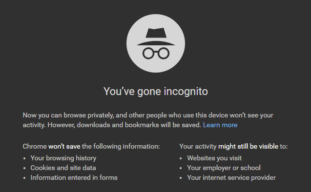

Incognito Mode: How Safe Is It…?
Incognito mode is most famous security feature used by people for private browsing. But is it really that trustworthy and secure as we make it out to be….
We all have a few secrets in real life we want to keep from everyone, even more so in virtual one. When we want to browse something on internet that we don’t want others to find out, we quickly switch to incognito mode. It is mostly used for private browsing. The sessions done in incognito mode are not saved in browsing history. So , we very easily assume that there is not even trace of data left of that browsing session.But, is it really true??
How Does Incognito Mode work
Incognito mode stores all browsing history of user, form data, browser cache, Cookies only temporarily. After the browsing session expires, all the data stored during Incognito session is deleted. There are various benefits of using incognito. You can sign in easily through different account on a website without actually logging out from previous one. OR you can keep yourself away from prying eyes of advertisers who constantly monitor your browsing activities.
How’s It not completely Secure
When you switch to incognito mode, there are certain warnings mentioned in browser like-
Your activity might still be visible to:
Websites you visit
Your employer or school
Your internet service provider
Now how is it possible?? All the traffic is routed through our ISP. That’s how we can still be tracked or monitored. Browser extentions like Adobe Flash, etc retain information if they are not disabled in incognito mode. Also by using recovery softwares (like Recuva), files concerning our browsing data can still be recovered from DNS cache. Also, an unexpected error like computer crash before the data can be deleted can also hinder clearing of temporary data files. An infected PC is also home for various keylogging malwares. Keyloggers are the hackers who steal your passwords as you login on any site.
If you are not satisfied with the level of privacy Incognito mode offers then there are a few more options you can opt to enhance privacy like-
-
You can use a VPN to mask your IP. A famous example of this is Tor.
-
For clearing out DNS , you can go in CMD and type ipconfig/flushdns.
So, that’s all about Incognito browsing . Follow above methods to make your browsing safe and secure…
Did you find this article useful? Contact us from the handles given at the end of the page .We look forward to helping you!